renv::install("testthat")
renv::install("OHDSI/Capr")HADES - open-source software for observational research
Biostat 218
1 Introduction
In these lectures we will learn:
About the open-source OHDSI
Rtool-stackThe community that supports the tool-stack
Distributed research needs
Programmatically defining cohorts

2 What is HADES?
Health analytics data to evidence suite (HADES)
Collection of 35
Rpackages used in almost every OHDSI studyRun directly against data in the OMOP CDM
- Health care insurance claims
- Electronic health records
Performan observational analyses
- Characterization
- Causal effect estimation
- Patient-level prediction
3 HADES design priniciples
Promote open science through open source
Execute directly against the OMOP CDM
Implement best practices as informed by methods research
Provide high quality software (documented, maintained, tested, validated)
Facilitate large-scale analytics, answering many questions at once
Support big data, covering hundreds of millions of lives
Enable federated analyses
Run across a wide variety of technical infrastructures
4 HADES paper
HADES paper goes deeper into HADES design prinicples
Please cite it when you use HADES
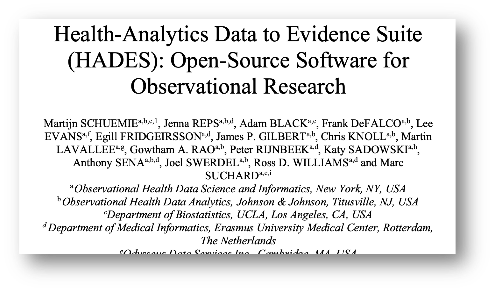
Schuemie M, Reps J, Black A, et al. 2024 Health-Analytics Data to Evidence Suite (HADES): Open-Source Software for Observational Research. Stud Health Technol Inform. 2024 Jan 25:310:966-970. doi: 0.3233/SHTI231108
5 HADES supporting packages
DatabaseConnector+SqlRender: write code once, run on all supported platforms (SQL Server, Oracle, Postgres, RedShift, BigQuery, DataBricks, Snowflake)Andromeda: Work with data objects too big to fit in memoryParallelLogger: extensive logging to facilitate remote debuggingCyclops: fit very large regression models (logistic, Poisson, Cox)DataQualityDashboard: evaluate data quality
6 HADES cohort packages
Important
We define a cohort as a set of persons who satisfy one or more inclusion criteria for a duration of time.
- Exposure cohorts (e.g. people exposed to warfarin)
- Outcome cohorts (e.g. people experiencing GI bleeding)
- Cohorts of special interest (e.g. pregnant persons)
Capr: define cohorts using complex logicPhenotypeLibrary: for storing OHDSI-approved cohort definitionsCirceR: for turning cohort definitions into SQL or human-readable textCohortGenerator: for instantiating cohorts in a databaseCohortDiagnosticsandPheValuator: for evaluating cohorts
7 HADES analytic packages
Characterization: characterizations of a target and a comparator cohortCohortIncidence: calculate incidence rates and proportionsPatientLevelPrediction: develop and evaluate prediction modelsCohortMethodandSelfControlledCaseSeries: estimate causal effectsEmpiricalCalibration: calibrate causal effect estimates based on negative controlsEvidenceSynthesis: combine causal effect estimates across databases without sharing patient-level data.
Research group focus
Causal effects at scale and (Bayesian) synthesis
8 HADES output
R objects possibly containing patient-level data
CSV files / database tables for sharing
Shiny apps

9 Publications using HADES
44 peer-reviewed clinical research papers
40 methods research papers
https://ohdsi.github.io/Hades/publications.html

10 A real strength of HADES
Federated analyses across a distributed research network
11 Distributed research network
- Multiple sites with data
- Hospital EHRs
- Administrative Claims
- Patient-level data cannot be shared
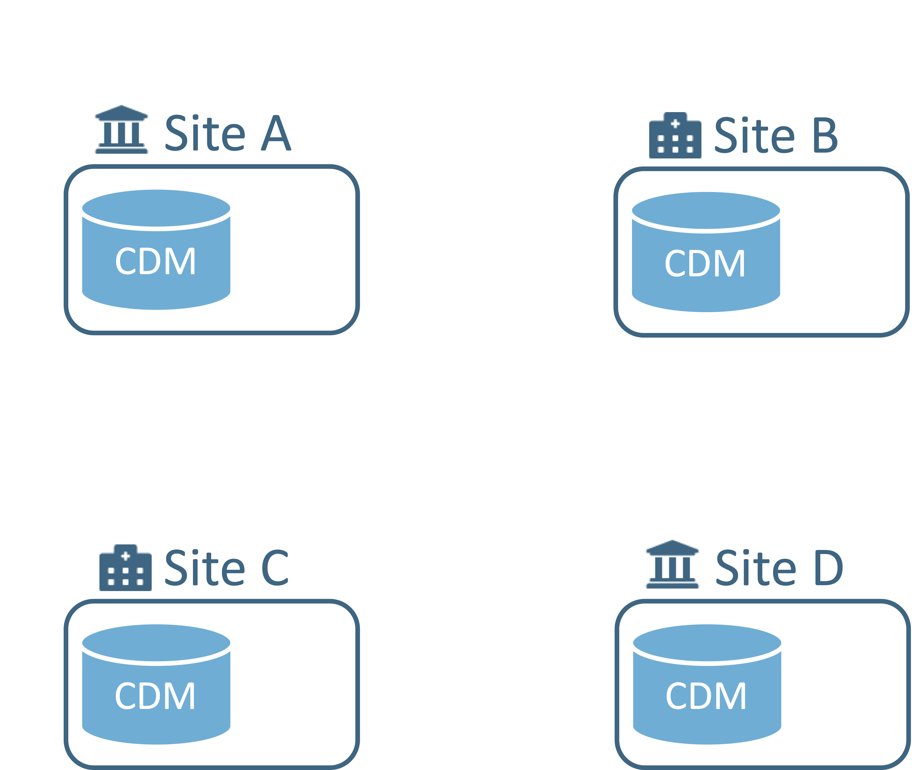
12 Distributed research network
- Any site can lead a study
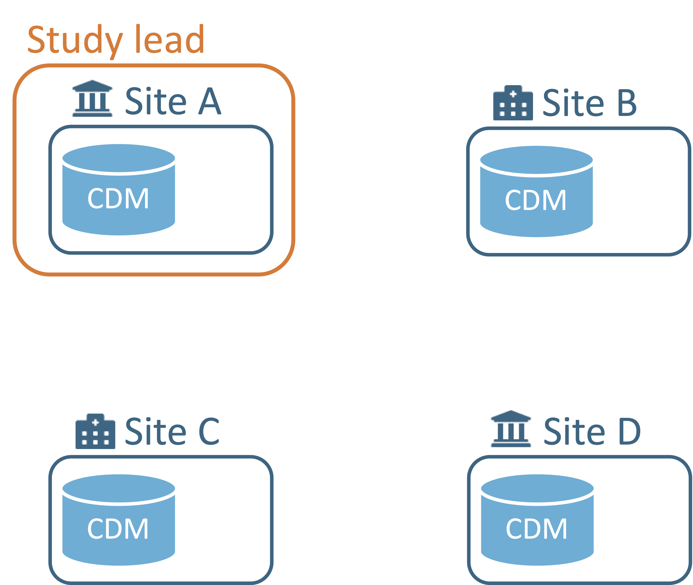
13 Distributed research network
Any site can lead a study
Analysis code is developed locally
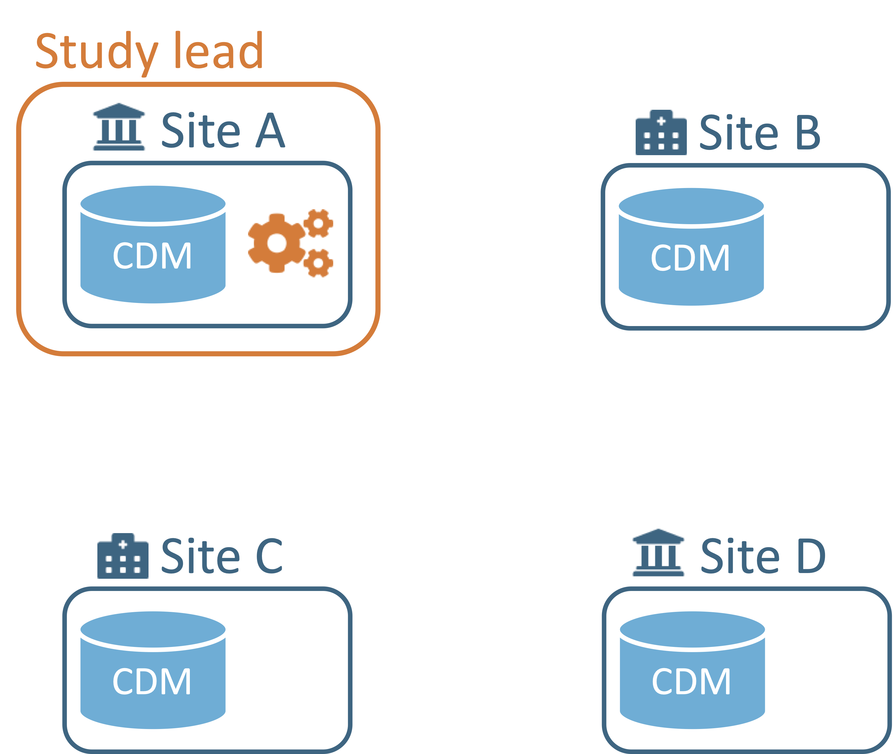
14 Distributed research network
Any site can lead a study
Analysis code is developed locally
Code is distributed to study participants
15 Distributed research network
Any site can lead a study
Analysis code is developed locally
Code is distributed to study participants
Results are generated (aggredated statistics)

16 Distributed research network
Any site can lead a study
Analysis code is developed locally
Code is distributed to study participants
Results are generated (aggredated statistics)
Results are sent back to study lead
17 Current network implementation
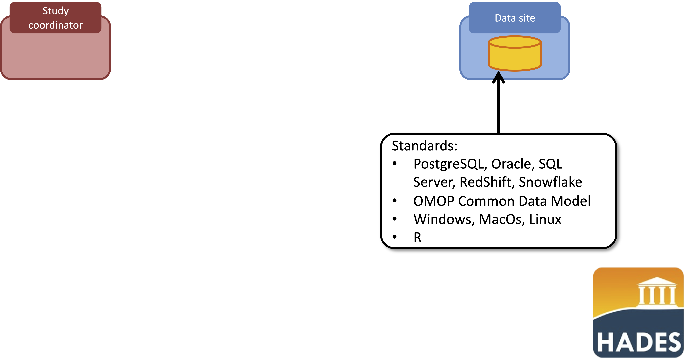
18 Current network implementation
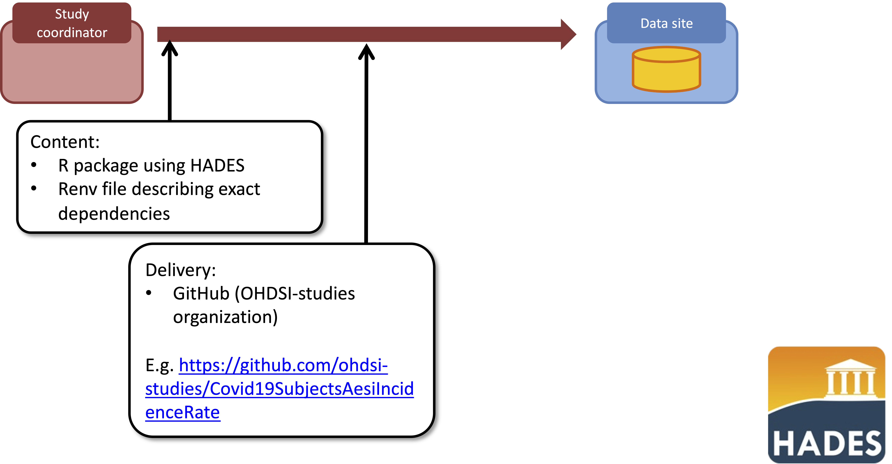
19 Current network implementation
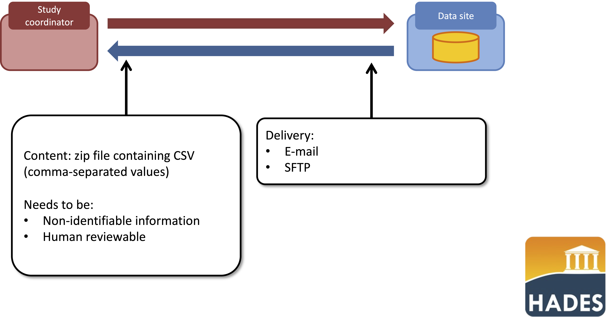
20 HADES organization
Developer guidelines
Code style guide
Each package has 1 or 2 maintainers.
Monthly meetings (3rd Thursday of the month, at 9am Pacific time)
Discussions on forums, Teams channel, issue trackers
Bi-weekly open-source community calls (Wednesdays, at 8am Pacific time)
21 Continuous integration
At each push to GitHub:
Run R Check on Windows, MacOS, and Linux
Unit tests can use a set of database servers (SQL Server, PostgreSQL, Oracle, RedShift, Spark, )
Compute code coverage
If push to main branch and higher version in DESCRIPTION, create release
22 HADES release process
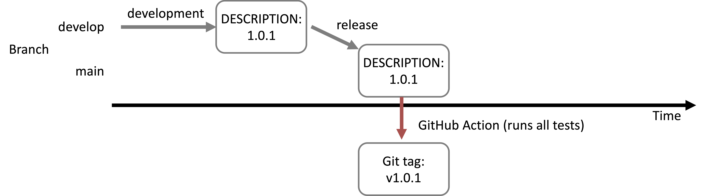
Pros:
Head of master is always latest released version:
remotes::install_github("ohdsi/Eunomia")
Git tag guaranteed to correspond to version in DESCRIPTION:
remotes::install_github("ohdsi/Eunomia", ref="v1.0.0")
A release is guaranteed to pass all tests
Prevents accidental installation of (buggy) develop version
Cons:
- Cannot use main for development
23 CRAN
Some HADES packages are in CRAN for easier install
Getting things in CRAN is hard, because
- Package size <7mb
- Cannot use database testing servers, but also not allowed not to have running examples / unit tests.
- CRAN requires code runs on really old platforms (e.g. Java 1.5, Solaris)
24 HADES-wide release
HADES-wide release twice a year
Currently available as
renvlock file, hopefully asdockercontainer starting next release
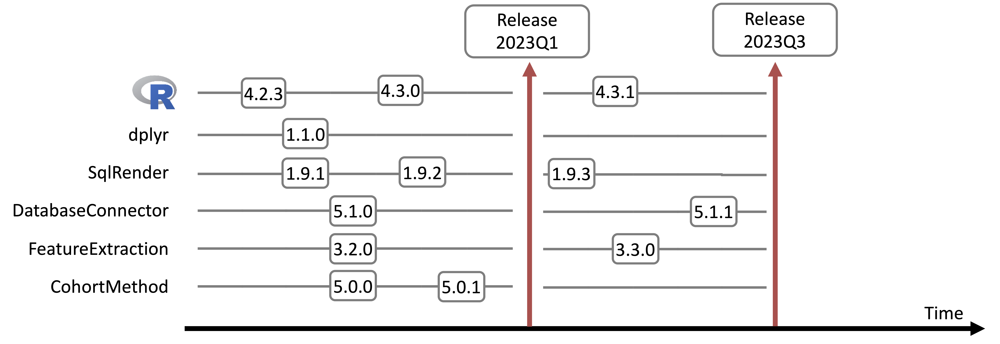
Important
docker often raises security concerns inside large organizations
25 Strategus
Most people who would like to use HADES analytics do not know R
Strategusaims to have analysis specs as input (JSON), and results as output (CSV files), with (Shiny) viewers for the output (after uploading to a database)Modular design: a study spec can list multiple modules, such as cohort generation + cohort method
Move away from sharing code across the network to sharing study specs only (for security and ease of distribution)
We will play with
Strategus later on
26 Review (high-level)
HADES is a suite of R packages for analyzing observational healthcare data
Thanks to the OMOP CDM, HADES runs on a wide variety of data sources across the world
Open source, to promote open science (all analytics code can be shared as part of publication)
Supports federated networks, where data stay locally, and results are shared
27 Review (low-level, unique features)
Re-use of cohort definitions
Standardization of analytics in open-source software
- Many opportunities for testing, review, fixing bugs, etc.
- Making it hard to do the wrong thing (opinionated)
Advanced methods to reduce bias
- Splines for time in self-controlled case series
- Large-scale propensity scores in cohort method
Objective study diagnostics to improve reliability of evidence
- Including negative controls
Designed to run across a network of databases
- Without sharing patient-level data
28 Minor error in course renv.lock
Let’s fix it!
29 Capr: cohort definition application programming in R
A language for expressing OHDSI cohort definitions in R code
Important
A cohort is a set of persons who satisfy one or more inclusion criteria for a duration of time
- One person may belong to multiple cohorts
- One person may belong to the same cohort for multiple different time periods
- One person may not belong to the same cohort multiple times during the same period of time
- A cohort may have zero or more members
30 Where Capr sits
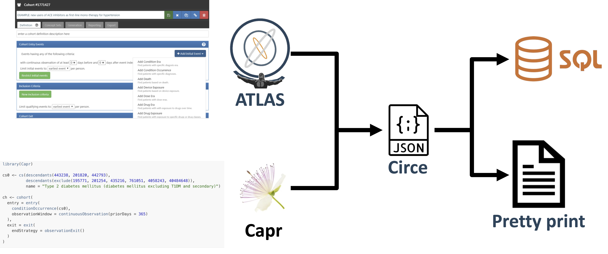
31 First exposure to lisinopril

Need to define:
32 Building concept sets
We want to include all drugs containing lisinopril (all descendents of lisinopril)
library(Capr)
lisinopril <- cs(descendants(1308216), name = "lisinopril")
lisinopril── <Capr Concept Set> lisinopril ───────────────────────────────────────────────
# A tibble: 1 × 9
conceptId conceptCode conceptName domainId vocabularyId standardConcept
<int> <chr> <chr> <chr> <chr> <chr>
1 1308216 "" "" "" "" ""
# ℹ 3 more variables: includeDescendants <lgl>, isExcluded <lgl>,
# includeMapped <lgl>hypertension <- cs(descendants(320128), name = "hypertension")33 Full cohort definition
lisinoprilCohort <- cohort(
entry = entry(
drugExposure(lisinopril), # use `drug_exposure` table
firstOccurrence()
),
attrition = attrition(
"365 days of prior observation" = withAll(
continuousObservation(prior = 365) # use `observation_period` table
),
"Prior hypertension" = withAll(
atLeast(1, conditionOccurrence(hypertension), # use `condition_occurence` table
duringInterval(eventStarts(-365, 0))
)
)
),
exit = exit(
endStrategy = drugExit(lisinopril,
persistenceWindow = 30,
surveillanceWindow = 0)
)
)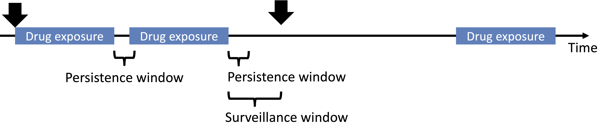
34 Using Capr, CohortGenerator and CirceR
Here we will design a cohort of patients suffering from a gastroinstinal (GI) bleed and build the cohort table in Eumonia.
library(Capr)
library(CohortGenerator)
library(CirceR)and connect to the database
giBleed <- cs(descendants(192671), name = "GI bleed")
as.json(giBleed){
"items": [
{
"concept": {
"CONCEPT_ID": 192671,
"CONCEPT_NAME": "",
"STANDARD_CONCEPT": "",
"STANDARD_CONCEPT_CAPTION": "",
"INVALID_REASON": "",
"INVALID_REASON_CAPTION": "",
"CONCEPT_CODE": "",
"DOMAIN_ID": "",
"VOCABULARY_ID": "",
"CONCEPT_CLASS_ID": ""
},
"isExcluded": false,
"includeDescendants": true,
"includeMapped": false
}
]
} # Can retrieve info from CDM if wanted
library(DatabaseConnector)
connectionDetails <- Eunomia::getEunomiaConnectionDetails()
connection <- connect(connectionDetails)
giBleed <- getConceptSetDetails(giBleed, connection, "main")Warning: Input SQL has already been translated, so not translating again
This warning is displayed once every 8 hours.disconnect(connection)
as.json(giBleed){
"items": [
{
"concept": {
"CONCEPT_ID": 192671,
"CONCEPT_NAME": "Gastrointestinal hemorrhage",
"STANDARD_CONCEPT": "S",
"STANDARD_CONCEPT_CAPTION": "Standard",
"INVALID_REASON": "V",
"INVALID_REASON_CAPTION": "Valid",
"CONCEPT_CODE": "74474003",
"DOMAIN_ID": "Condition",
"VOCABULARY_ID": "SNOMED",
"CONCEPT_CLASS_ID": "Clinical Finding"
},
"isExcluded": false,
"includeDescendants": true,
"includeMapped": false
}
]
} 35 Create a simple Capr cohort
Patients enter cohort when a concept in concept set occurs in condition_occurrence table
giBleed <- cs(descendants(192671), name = "GI bleed")
giBleedCohort <- cohort(
entry = entry(conditionOccurrence(giBleed))
)By default, patients exit cohort at the end of their observation period
36 Create more complex cohorts
We want two cohorts with inclusion rules and exit criteria
No prior exposure to NSAIDS
Exit at end of exposure, allowing 30-days btw RXs
# Concept sets:
celecoxibConceptId <- 1118084
diclofenacConceptId <- 1124300
nsaids <- cs(
descendants(c(celecoxibConceptId, diclofenacConceptId)),
name = "NSAIDS"
)
celecoxib <- cs(
descendants(celecoxibConceptId),
name = "Celecoxib"
)
diclofenac <- cs(
descendants(diclofenacConceptId),
name = "Diclofenac"
)
# Inclusion criterion:
attrition = attrition(
"No prior NSAID exposure" = withAll(
exactly(0, drugExposure(nsaids), duringInterval(eventStarts(-Inf, -1)))
)
)
# Cohorts:
celecoxibCohort <- cohort(
entry = entry(
drugExposure(celecoxib, firstOccurrence()),
observationWindow = continuousObservation(priorDays = 365)
),
attrition = attrition,
exit = exit(endStrategy = drugExit(celecoxib,
persistenceWindow = 30,
surveillanceWindow = 0))
)
diclofenacCohort <- cohort(
entry = entry(
drugExposure(diclofenac, firstOccurrence()),
observationWindow = continuousObservation(priorDays = 365)
),
attrition = attrition,
exit = exit(endStrategy = drugExit(diclofenac,
persistenceWindow = 30,
surveillanceWindow = 0))
)37 Print-friendly
We can generate human-readable output of any cohort definition using the CirceR package
rmarkdown <- CirceR::cohortPrintFriendly(toCirce(celecoxibCohort))
writeLines(rmarkdown)### Cohort Entry Events
People with continuous observation of 365 days before event may enter the cohort when observing any of the following:
1. drug exposure of 'Celecoxib' for the first time in the person's history.
Limit cohort entry events to the earliest event per person.
### Inclusion Criteria
#### 1. No prior NSAID exposure
Entry events having no drug exposures of 'NSAIDS', starting anytime prior to cohort entry start date.
### Cohort Exit
The cohort end date will be based on a continuous exposure to 'Celecoxib':
allowing 30 days between exposures, adding 0 days after exposure ends, and using days supply and exposure end date for exposure duration.
### Cohort Eras
Remaining events will be combined into cohort eras if they are within 0 days of each other.
Important
NB: missing concept set definitions. Better version is coming.
- See: LEGEND-T2DM function
We can also use CirceR to generate SQL, but CohortGenerator does much more.
38 Generate the cohorts
CohortGenerator builds, manages and instantiates cohort sets (groups of cohort definitions)
cohortsToCreate <- makeCohortSet(giBleedCohort,
celecoxibCohort,
diclofenacCohort)
cohortsToCreate# A tibble: 3 × 4
cohortId cohortName sql json
<int> <chr> <chr> <chr>
1 1 giBleedCohort "CREATE TABLE #Codesets (\r\n codeset_id int… "{\"…
2 2 celecoxibCohort "CREATE TABLE #Codesets (\r\n codeset_id int… "{\"…
3 3 diclofenacCohort "CREATE TABLE #Codesets (\r\n codeset_id int… "{\"…39 Generate the cohorts
# Create the cohort tables to hold the cohort generation results
cohortTableNames <- CohortGenerator::getCohortTableNames(
cohortTable = "my_cohort_table")
cohortTableNames
# Better to pass connection details than connection itself
connectionDetails <- Eunomia::getEunomiaConnectionDetails()
CohortGenerator::createCohortTables(
connectionDetails = connectionDetails,
cohortDatabaseSchema = "main",
cohortTableNames = cohortTableNames)
# Generate the cohorts
cohortsGenerated <- CohortGenerator::generateCohortSet(
connectionDetails = connectionDetails,
cdmDatabaseSchema = "main",
cohortDatabaseSchema = "main",
cohortTableNames = cohortTableNames,
cohortDefinitionSet = cohortsToCreate)# Get raw counts
CohortGenerator::getCohortCounts(
connectionDetails = connectionDetails,
cohortDatabaseSchema = "main",
cohortTable = cohortTableNames$cohortTable
) cohortId cohortEntries cohortSubjects
1 1 479 479
2 2 1800 1800
3 3 830 83040 Review
- ATLAS is a web-based GUI for designing cohorts
- interacts directly with a CDM; has record counts
Capris programmable in R- more reproducible; convenient for generating multiple related cohorts
Now we will start to use these cohorts